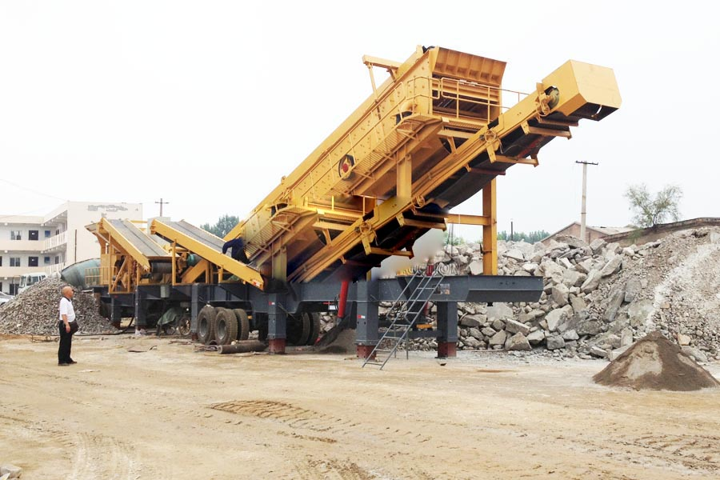

Construction waste crushing production line

Mobile construction waste crushing station for urban construction waste crushing.
Construction Waste Recycling Plant
Construction Waste Recycling Plant. Construction waste recycling equipment utilization which require major construction waste recycling, construction waste disposal equipment used in all manufactured by Zhengzhou Dingsheng company, mainly ZSW200 vibrating screen feeder, DPF-125 construction waste crusher.
Construction waste, construction waste disposal equipment, CAG build waste treatment equipment is divided into: fixed construction waste disposal equipment and mobile construction waste disposal equipment. CAG construction waste recycling equipment is the introduction of Germany advanced construction waste disposal equipment.

Building Materials Recycling
There are two types of construction waste: Inert construction waste, Non-inert construction waste. Non-inert construction waste is around 20% of the total and usually comprises bamboo, timber, vegetation, packaging waste and other organic materials. Some of these can be recycled while others are disposed of at landfills. In contrast, inert waste – otherwise known as public fill – mainly includes construction debris, rubble, earth, bitumen and concrete, aggragate, which can be used for land formation. Materials like concrete and asphalt can also be recovered for construction use.
Free garbage removal pavement refurbishment find CAG mobile crushing and recycling equipment, recycling of construction waste crushing and recycling of construction waste is inseparable from the use of equipment, CAG mining machine is the country's first production of mobile crushing and recycling equipment business, experience in the field of construction waste rich.
Construction Waste Recycling Plant supplier. Building materials are crushed and screened on-site to produce building regulation standard aggregates, which are suitable for use in a wide variety of construction purposes as secondary aggregates. Waste soil is also screened and processed at the King’s Dock facility to produce topsoil suitable for landscaping and construction projects.
Building Materials Recycling Plant manufacturer
CAG is a manufacturer of crushers and grinding mills in China. Mobile crushing plant we design is very suitable for construction waste recycling.CAG supplies the professional construction waste crushing plant, including jaw crusher, impact crusher, cone crusher and mobile crusher. Of all these construction crushers, mobile crusher is the most convenient. Usually the construction waste is in city and to deal with them we should better use portable equipment.
Building waste production line, construction waste, construction waste disposal equipment, to meet the needs of urban modernization, urban construction waste becomes ... several years of painstaking research staff research, and finally the successful launch of construction waste disposal equipment.
Construction Waste Recycling Plant manufacturers. CAG mining machine of mobile construction waste recycling equipment, out of the resources of the road a construction waste, construction waste so that played a regeneration. Construction waste after treatment, can be turned into sand and aggregate.
Leave Me A Message, Now
If you have any questions regarding equipment prices, production line configuration or other problems, you can send a message to us, we will contact you soon.